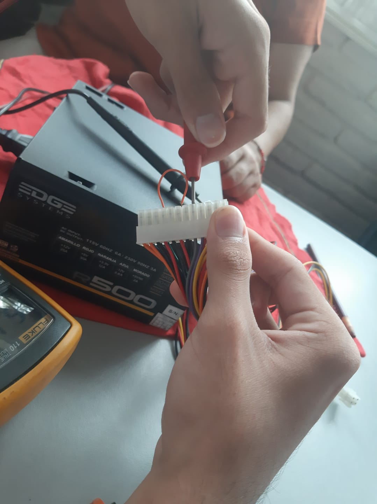

¿Cuantas veces se deben cepillar los dientes al dia?
Al menos 3 veces al dia.
¿Cuales son las tecnicas de cepillado?
La técnica de cepillado más recomendada es la de Bass, que consiste en colocar
el cepillo a 45° respecto a la encía,realizando movimientos vibratorios suaves
para limpiar el surco gingival

La vida de un critico es sencilla en muchos aspectos... arriesgamos poco, y tenemos poder sobre aquellos que ofrecen su trabajo y su servicio
a nuestro juicio.